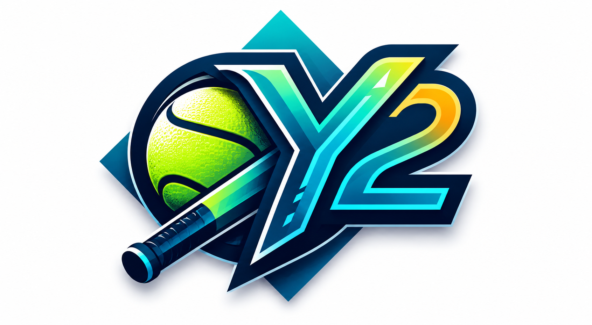

Ei dataa saatavilla
Dashboard odottaa tilastodataa. Aja Python-hakuohjelma
tuottaaksesi
PDATA-objektin ja päivitä tämä sivu.
python paivita_pro_dashboard.py

YDIN 2
Superpesis Analytics Dashboard — MSU 2026
Ydin 2 on pesäpallon analytiikkadashboard,
joka pyrkii tuomaan esiin joukkueiden ja pelaajien
todellisen tehokkuuden ja tehottomuuden
— sekä näyttämään, kuka tai ketkä ovat tällä hetkellä
liekeissä.
Dashboard yhdistää viralliset pesistulokset.fi-tilastot
Excel-lyöntidata-analyysiin kattavaksi kokonaisuudeksi, joka kattaa
joukkueiden kuntopuntarin, nelikenttäanalyysin, H2H-joukkuevertailun,
pelaajatilastot sekä palotilanne-analyysin.
Sarjan tilanne tällä hetkellä
Ladataan sarjataulukkoa…
ℹ Vireystila-badge = komposiittipisteet (0–100) ·
Voittoputki×20 +
Viim.5 voitto%×50 +
Kausivoitto%×30
· ≥80 🔥 Liekeissä · ≥70 ✅ Hyvässä vireessä · ≥40 🟦 Tasainen · ≥20 ⚠️ Haparoiva · <20 ❄️ Kriisi
Nelikenttäanalyysi
Kotiutustehokkuus vs. Torjuntatehokkuus
Quadrantit
DOMINOIVAT
Kotiuttaa ja torjuu
Kotiuttaa ja torjuu
TORJUVAT
Defensiivisesti vahva
Defensiivisesti vahva
KOTIUTTAVAT
Offensiivisesti vahva
Offensiivisesti vahva
KEHITTYVÄT
Molemmat kehittyvät
Molemmat kehittyvät
Akselit
X → Kotiutustehokkuus%
Y ↑ Torjuntatehokkuus%
Kehityssuunta
Viim. 5 pelin sijainti
Nuoli osoittaa kehityssuunnan kauden keskiarvosta kohti viimeisintä muotoa.
Mediaaniviivat
—
Joukkueiden Vireystila
Muoto ja avainmittarit joukkueittain
H2H Joukkuevertailu
Valitse kaksi joukkuetta vertailtavaksi
?
VS
?
Valitse molemmat joukkueet yllä
Pelaajatilastot
Top pelaajat kategorioittain — klikkaa saraketta lajitellaksesi
ℹ️ Kentällemenot tapahtuvat 0-tilanteessa (ei pesällä olevia juoksijoita). Tilasto kuvaa lyöjän kykyä päästä kentälle tyhjältä pesältä.